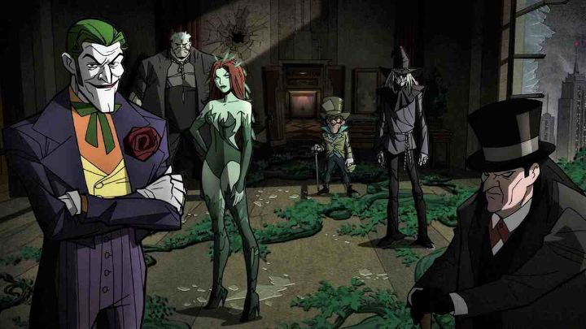

Disclaimer: This is a review of "Batman - The Long Halloween," an animated adaptation of the graphic novel of the same name. It was released in two parts ("Part 1" and "Part 2"), and both are covered here.I feel like every critique I write of the direct-to-DVD DC Animated films require a disclaimer up front: I don't like them. Specifically, the animation quality sucks. I can't help but compare these to Japanese manga going to anime... there, comics are typically drawn by one person in black and white, and quite frequently, popular manga series look ugly and lack in technical skill. Their anime adaptations, with a multidisciplinary team of trained artists bringing their unique visions, are a vast improvement, and fans of an original manga have reason to be excited to see a likely improved version on screen. On the flip side, American comics look better (generally), or at least more detailed, often with teams of artists working on a single book. It simply isn't feasible to translate those detailed or exagerrated ink lines to animation, so virtually every DC animated film is immediately a disappointment to the book. Aside from what is and isn't feasible, DC animation has featured flat and stiff character designs and animation for at least two decades, the cheapest I've ever seen, as if was was a homework assignment from a high-school kid trying it for the first time... a far cry from "Batman - The Animated Series" from the 90's. Consider that, as of 2021, there have been over 40 of these movies, all direct to home video and not theatrical, and yet each managing to make a couple million in sales to die-hard fans: even Warner Bros knows this is just a cash grab, and knows to keep their budgets low enough to keep the machine going. ... all that said, they've taken small steps to get better. And a recent trend to adapt some of Batman's most celebrated graphic novels got my attention. I had already read the original book of "The Long Halloween," an excellent mystery crime-drama, and when heavily discounted on a Black Friday (America's most beloved holiday), I figured it was a good place to give DC's cartoons a second chance. And "Batman - The Long Halloween" ("Part 1" and "Part 2") turned out better than I expected. Not great, but acceptable.I attribute the movies' success here to two things: strong direction, and an attempt to recreate the graphic novel's art style. From the start, there's confident and cinematic skill put to work, and its clear the studio respects the original book, and had intentional visions for the adaptation here. Both movies lose a little momentum in their second halves, but I still have to give the director Chris Palmer credit. The original graphic novel, like many mature comics in the 80's and 90's, was gritty with muted colors, with a distinct style for the city and its characters. Impressively, the backgrounds in the movie version of "Halloween" are excellent, rendering grey skies and gothic metropolitan skyscrappers to look as though they were taken straight from the comic. It looks different, and far better, than most of DC's other movies. Unfortunately, the characters look flat and stiff, as expected, and the animation isn't good for most of the runtime. But here too, there are some improvements: characters have bold outlines to stand out, and some of the comic's more unusual designs (the Joker in particular) are indeed adapted here, rather than sticking with more conventional designs. It's worth mentioning that animation during action scenes have been better in these recent movies, and come across much better here than the talking scenes, with sharp choreography and smart use of 3D objects to assist.  Beyond all that superficial stuff, the story is largely in tact here. Set relatively early in Batman's career, it involves him, Commissioner Gordon and Harvey Dent making a pact to take down Gotham's reigning mob boss, "The Roman" Carmine Falcone. However, things get complicated when a masked killer murders one of Carmine's family members on Halloween. Then another member is killed on Thanksgiving... then again on Christmas. The killer is dubbed "Holiday," and is clearly targeting the Falcone family, but why? And who is "Holiday's" secret identity? Existing villain "Calendar Man" is the obvious suspect... or could it be Carmine's son out of anger... or the rival Maroni gang... or Harvey Dent's clinically depressed wife? Harvey Dent himself is a suspect early on, and as things progress, it becomes harder to deny the possibility. Taking place over a full year, it treats itself as a genuine mystery, and first-time viewers will be second-guessing the truth until the end. The story worked well in the graphic novel, but in movie-form, I did start to question whether the pacing for a year-long story made sense. And the interesting story slowly takes a backseat into this becoming an origin story for iconic villain Two-Face, as well as featuring the entire rogue's gallery, including Joker, Poison Ivy, Scarecrow, Mad Hatter, Solomon Grundy, Catwoman, and more. I understand the temptation to include all the famous characters, and it was exciting in the book, but it seems too indulgent here. For that matter, while it's become common for DC to separate these stories into two movies, I think a tighter script and a single movie of two hours would have been better. Finally, you might be curious as to whether the movies makes any significant changes to the original book. There are a few key changes, but disappointingly, it doesn't significantly change anything in the final act, a missed opportunity in a mystery where many fans will already know the ending. And is the story so good that even non-comic-book fans might want to watch? I might have said that of the graphic novel, but I don't think the movies break that mold, and only existing Batman fans should even bother to care that this exists.Music is cinematic and moody, and voice acting is solid throughout. Notably, Troy Baker makes a good Mark Hamill impression of the Joker, and Naya Rivera plays a Catwoman that's important to the story, in one of her last roles before she expectedly passed away (the first movie is dedicated to her). All in all, "Batman - The Long Halloween" isn't as good as the original graphic novel, but it's not a bad way to experience the story. And the improved competence in the movies makes me more optimistic in some of the more recent DC animated films I missed out on. I'm tempted to go back and catch up on a few, even if I have to risk putting up with some cheap animation.
- "Ani" More reviews can be found at : https://2danicritic.github.io/ Previous review: review_Bartender Next review: review_Batman_Ninja